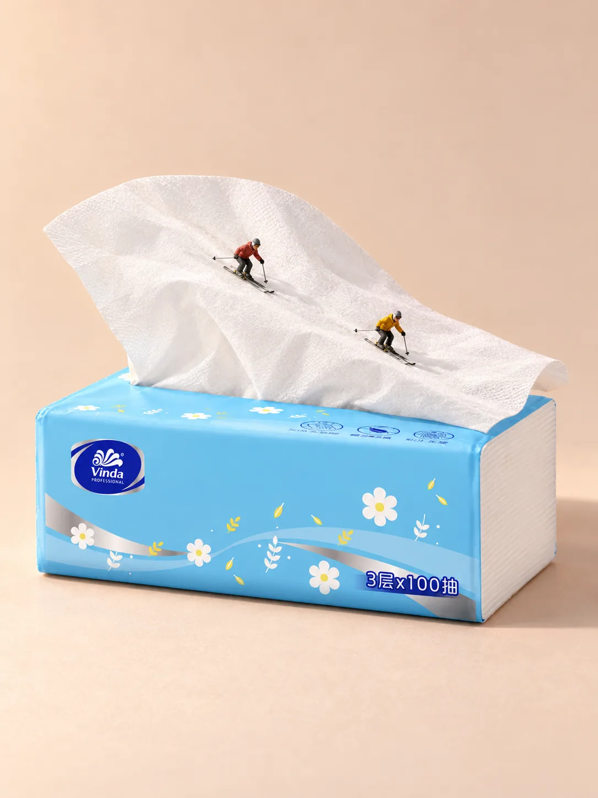
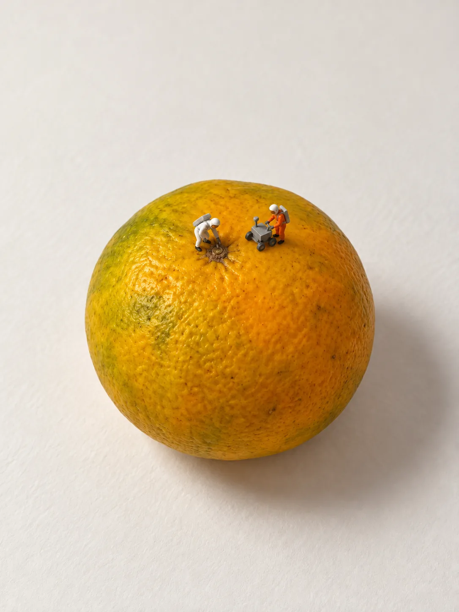
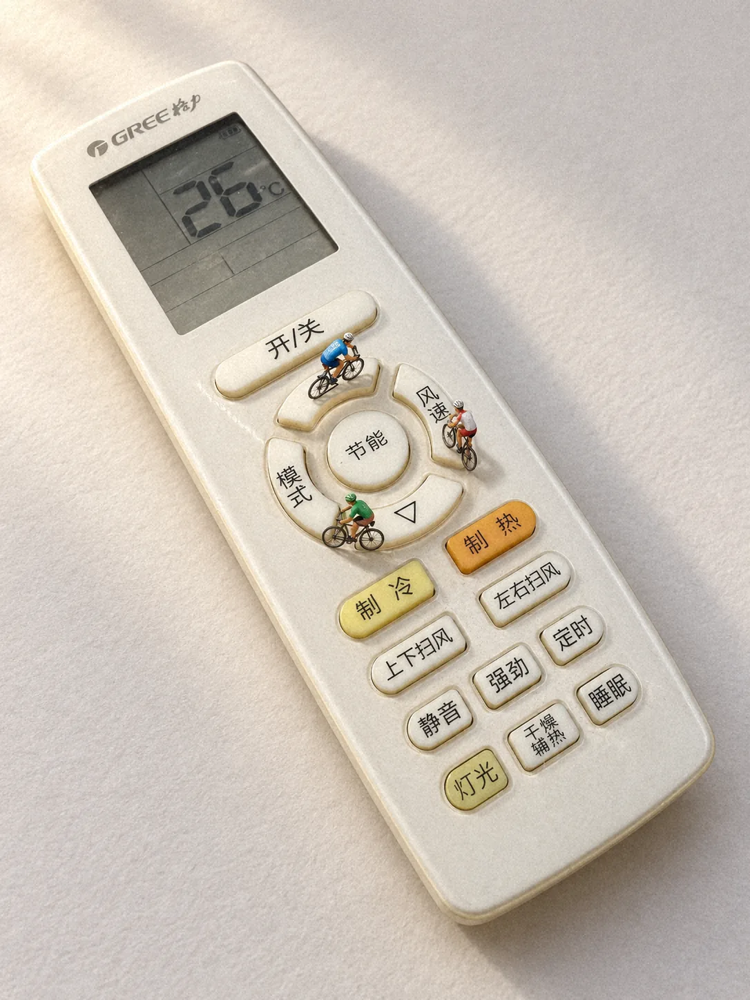

2026-10-20
回形针 · 跨栏赛
运动会跨栏决赛，三枚回形针立成栏架。领跑的已经腾空，后面两人紧追。
部分案例含真实品牌标识，仅展示创意与生成边界，不代表品牌合作、背书或额外商用许可。品牌与素材说明
01 / 二创实战 · 实验教程

另一种入口 / 物件组合

真实过程教程 / 2026-10-15

真实参考实测 / 2026-10-14

NEW WORK / 2026-10
回形针成了跨栏，剪刀的柄环成了跑道。
每张都先想好画面：谁在做什么，物件的哪个部分成了什么。
均为 AI 制作，每张只出 1 次图。
2026-10-20
运动会跨栏决赛，三枚回形针立成栏架。领跑的已经腾空，后面两人紧追。
2026-10-20
一个孔一间房的孔洞旅馆：有人架梯探进房间，有人坐在孔里看书，楼下的旅客拎着行李抬头看。
2026-10-21
剪刀柄环上的接力赛，选手沿着环形跑道冲向终点。
2026-10-21
刀面上新开的雪道。单板滑雪的人一路刻出雪痕，同伴拄着雪杖在刀轴旁等他。
2026-10-19
度假酒店的豪华房型：每位客人一个私人泳池，谁也不挤谁。
2026-10-18
柠檬味的球场。最后一秒出手，球正悬在挂孔篮筐上方。
FROM A REAL PHOTO / 2026-10-13
刨下的奶酪碎屑，成为微缩清雪队的积雪。
从同一张真实刨丝器照片出发，一张柔和的室内光，一张午后侧光。用户对照原照确认：刨丝器还是那只刨丝器，故事和小人大小也都对。
两张均为 AI 生成，加了胶片颗粒。
2026-10-13
刚刨下的奶酪像一场大雪，清雪队赶来铲雪运走。
2026-10-13
午后斜阳里，清雪队把奶酪积雪铲进小推车。
FROM A NAME / 2026-10-12
故事从物件的用途和痕迹里来：咖啡渍成了跑道，尺带成了滑梯。
人偶按 Preiser 涂装塑料模型的样子描述。
这 8 张只用了物品名称，没有商品照片。
2026-10-12
工人站在梯子上，像擦橱窗一样擦镜片。
2026-10-12
杯子留下的咖啡渍圈成为跑道，孩子赛跑、奶奶加油。
2026-10-12
杯里装土，两位园丁种下一棵模型树。
2026-10-17
游客在杯柄框里摆姿势，同伴在一旁拍照。
2026-10-17
张开的订书机读作鳄鱼，饲养员递鱼喂食。
2026-10-12
上臂的坡度成为滑板道，一人滑行、一人等待。
2026-10-12
拉出的尺带弯成滑梯，孩子从上面滑下。
2026-10-12
拉直的尺带成为自行车道，两人沿刻度骑行。
THE COLLECTION / 18 STORIES
从梳齿间的田垄，到装订圈旁的停车架。
看见原物的结构，也看见故事发生的理由。
均为 AI 生成。点击图片看大图。
早期作品
梳齿间是一垄垄田地，农夫们正在齿缝里耕作。
早期作品
笔记本的装订圈成了路边的自行车停车架。
早期作品
薯片上的波纹是一片金色麦田，收割机正在秋收。
早期作品
铅笔划过的石墨线是一条新路，工人和压路机正在铺路。
早期作品
回形针的长圆环成了速滑冰道，两名选手在里面滑行，教练在外面拿秒表计时。
早期作品
拉链分开处是一条运河，小拖船正驶向拉头。
早期作品
修正带的弧形外壳是一座小山，游客沿着山路徒步。
早期作品
黄色海绵是一面崖壁，攀登者向上爬，山顶草地上有营地。
早期作品
订书机张开的口成了舞台，乐手在里面演奏，观众在外面听。
早期作品
刨丝器的孔成了攀岩点，攀岩者挂着绳往上爬，同伴在下面保护。
早期作品
眼镜片成了玻璃屋顶，修理工在镜片边上协作维修。
早期作品
长尾夹的金属斜面是一面陡坡，一人攀登，一人在下面拉绳保护。
2026-10-06
展开的纸胶带是一段新路，小压路机正在压平路面。
早期作品
跳远比赛，卷尺就摆在沙坑旁，裁判正在量成绩。
早期作品
固体胶的白色胶芯是一座雪峰，攀登者登顶，队友在下方接应。
早期作品
侧放的马克杯成了避雨的小屋，屋里的人向撑伞走来的朋友招手。
早期作品
透明胶带的圆环成了音乐厅，乐手在中间演奏，三位观众坐在卷边上听。
早期作品
小青柑开了口成了茶仓，工人们正把茶叶吊运出来。